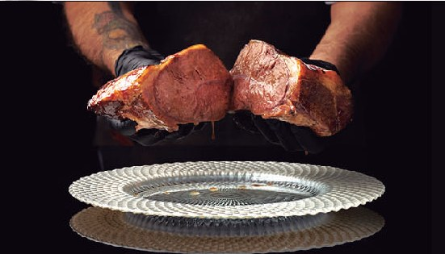

Cottura a bassa temperatura

Cappello del prete
Luxury Tapas · CBT
Taglio di vitello con una venatura di collagene. La lunga cottura sottovuoto ammorbidisce le fibre e valorizza il sapore.
| Confezione | 2 sacchetti da circa 2 kg |
| Preparazione | 24 h in frigorifero a +4 °C |
| Servizio | Forno · 200 °C · 20 min |